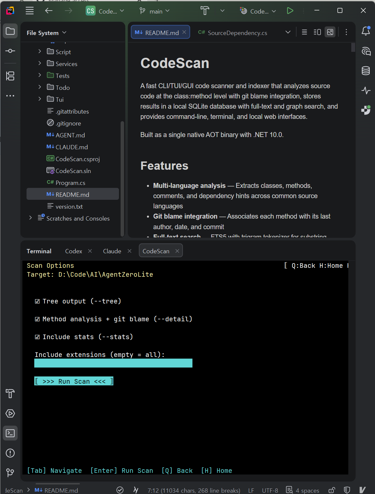
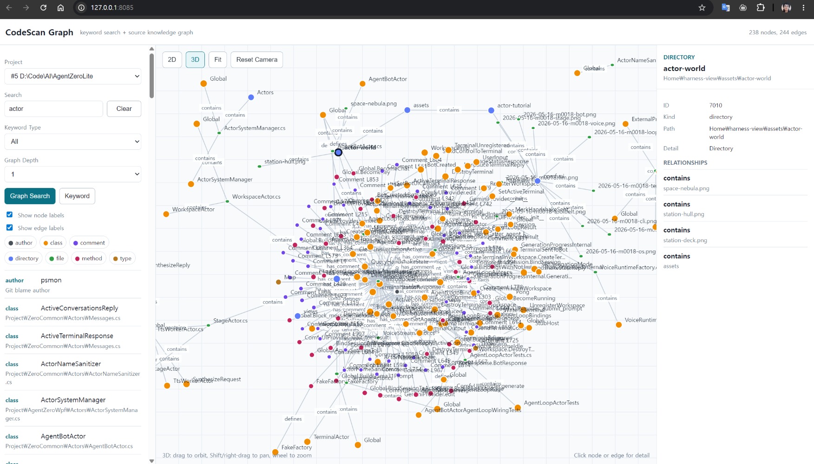

Single-binary code scanner for the AI era
AI 시대를 위한 단일 바이너리 코드 스캐너
Index a codebase at the class:method level with git blame, query it from any CLI, TUI, or local web GUI — one self-contained binary, no runtime to install.
소스 코드를 클래스:메서드 단위로 git blame 과 함께 인덱싱하고, CLI / TUI / 로컬 웹 GUI 어느 곳에서든 질의 — 런타임 설치 없는 단일 self-contained 바이너리.
One release pipeline produces four native binaries (win-x64, linux-x64, linux-arm64, osx-arm64) with SQLite embedded inside the single file. The same binary feeds three install channels — winget, brew, npm — plus a direct shell installer. Every release passes a CI smoke test (--version + projects) so a missing native library can never reach users.
하나의 릴리즈 파이프라인이 네 개의 네이티브 바이너리 (win-x64, linux-x64, linux-arm64, osx-arm64) 를 SQLite 임베드 상태로 만들어내고, 동일한 바이너리가 3개 설치 채널 — winget, brew, npm — 과 직접 셸 인스톨러를 모두 먹입니다. 모든 릴리즈가 CI smoke test (--version + projects) 를 통과 — 네이티브 라이브러리 누락이 사용자에게 닿을 수 없습니다.
winget install psmon.CodeScan
winget install --manifest packaging\winget\manifests\p\psmon\CodeScan\0.5.0 after enabling local manifests once: winget settings --enable LocalManifestFiles (admin).winget install --manifest packaging\winget\manifests\p\psmon\CodeScan\0.5.0. 사전에 관리자 PowerShell 로 winget settings --enable LocalManifestFiles 한 번 실행.brew tap psmon/codescan brew install codescan
sudo npm install -g @webnori/codescan-cli
sudo). Registry publish pending. Until then, use the direct installer below. Use the scoped name @webnori/codescan-cli — the bare codescan-cli on npm is an unrelated, broken third-party squat.sudo 불필요). 레지스트리 publish 대기 중. 그때까지는 아래 직접 인스톨러 사용. 반드시 스코프 붙은 @webnori/codescan-cli 사용 — npm 의 짧은 codescan-cli 는 무관한 제3자의 깨진 squat 패키지.For environments without a package manager — or to pin a specific release. Both installers download the matching asset, verify SHA256 against checksums.txt, install to a user-local path, and never touch ~/.codescan/{db,logs,config}.
패키지 매니저 없는 환경 또는 특정 릴리즈로 고정할 때. 두 인스톨러 모두 자산 다운로드 → checksums.txt 기준 SHA256 검증 → 사용자 로컬 경로 설치 → ~/.codescan/{db,logs,config} 사용자 데이터는 절대 건드리지 않음.
# Windows (PowerShell) iwr https://raw.githubusercontent.com/psmon/CodeScan/main/Script/install-win.ps1 -OutFile install-win.ps1 .\install-win.ps1 # Linux / macOS curl -fsSL https://raw.githubusercontent.com/psmon/CodeScan/main/Script/install.sh -o install.sh sh install.sh


Extracts classes, methods, comments, and dependency hints across C#, Java, Kotlin, JS, TS, PHP, Python, Go, Rust, C/C++.
C#, Java, Kotlin, JS, TS, PHP, Python, Go, Rust, C/C++ 에서 클래스, 메서드, 주석, 의존성 힌트 추출.
Each method carries its last author, date, and commit — no extra step, no separate index.
각 메서드가 최종 작성자, 작성일, 커밋을 함께 보관 — 별도 단계나 인덱스 없음.
SQLite FTS5 with a trigram tokenizer covers substring search and CJK languages (Korean, Chinese, Japanese) effectively.
SQLite FTS5 + trigram 토크나이저로 부분 문자열 검색과 한·중·일 CJK 언어를 효과적으로 커버.
git log --grepgit log --grepCombines indexed FTS5 hits with live git log --grep matches — covers both the index and commit-message context.
인덱싱된 FTS5 결과와 라이브 git log --grep 매치를 결합 — 인덱스와 커밋 메시지 컨텍스트를 모두 커버.
Neo4j-style nodes (project, file, class, method, author, type, module) + edges (contains, defines, authored, imports, creates, uses_type, inherits_or_implements) — all in embedded SQLite.
Neo4j 스타일 노드 (project, file, class, method, author, type, module) + 엣지 (contains, defines, authored, imports, creates, uses_type, inherits_or_implements) 를 임베디드 SQLite 에.
MATCH query subsetMATCH 질의 서브셋Run MATCH ... WHERE ... LIMIT against the source graph — for CLI users, AI agents, and automation scripts that need structured graph retrieval without raw SQL.
소스 그래프에 MATCH ... WHERE ... LIMIT 실행 — SQL 직접 사용 없이 구조화된 그래프 조회가 필요한 CLI 사용자, AI 에이전트, 자동화 스크립트 용.
Project browsing, scanning, keyword search, graph search — entirely from the terminal.
프로젝트 탐색, 스캔, 키워드 검색, 그래프 검색 — 터미널만으로.
Local web GUI on port 8085. Keyword + graph + Cypher-like query, Neo4jClient-style 2D graph canvas, controllable 3D view.
포트 8085 로컬 웹 GUI. 키워드 + 그래프 + Cypher-like 질의, Neo4jClient 스타일 2D 그래프 캔버스, 카메라 제어 가능한 3D 뷰.
.NET 10 self-contained single file with SQLite native lib embedded. Copy one file and run — Raspberry Pi included.
.NET 10 self-contained 단일 파일에 SQLite 네이티브 lib 임베드. 파일 하나 복사하면 끝 — 라즈베리 파이 포함.
winget install psmon.CodeScan # Windows
brew install psmon/codescan/codescan # macOS
sudo npm install -g @webnori/codescan-cli # Linux
winget install psmon.CodeScan # Windows
brew install psmon/codescan/codescan # macOS
sudo npm install -g @webnori/codescan-cli # Linux
codescan scan /path/to/project
codescan search "HttpClient" --type method
codescan query "MATCH (c:class)-[r:uses_type]->(t:type) WHERE t.label = 'HttpClient'"
codescan tui
codescan gui start --port 8085 # browse http://127.0.0.1:8085/
| Command | Description | 설명 |
|---|---|---|
| scan [path] | Register + analyze a directory | 디렉토리 등록 + 분석 |
| list <path> | Scan with custom filtering and output | 사용자 정의 필터/출력으로 스캔 |
| search <query> | Hybrid FTS5 + git log search | FTS5 + git log 하이브리드 검색 |
| graph [query] | Search and inspect the source graph | 소스 그래프 탐색 |
| query <graph-query> | Run a Cypher-like MATCH query | Cypher-like MATCH 질의 실행 |
| gui start | stop | Start / stop the local web GUI | 로컬 웹 GUI 시작 / 정지 |
| tui | Launch the interactive TUI | 인터랙티브 TUI 실행 |
| projects | List all registered projects | 등록된 모든 프로젝트 나열 |
| project <id> | Show project summary / --detail | 프로젝트 요약 또는 --detail 전체 보기 |
2026–2027 AI infrastructure is shifting from cloud frontier models toward on-device SLMs (Gemma 3, Nemotron Nano) and edge agents. Native AOT single-binary tools fit the same constraints those models live under — no runtime present, memory pressure, instant cold-start, supply-chain integrity. CodeScan ships under those constraints from v1.
2026~2027년 AI 인프라의 무게중심이 클라우드 프론티어 모델에서 온디바이스 SLM (Gemma 3, Nemotron Nano) 과 엣지 에이전트 로 이동하고 있습니다. Native AOT 단일 바이너리 도구는 그 모델들이 처한 제약 — 런타임 부재, 메모리 압박, 즉시 콜드 스타트, 공급망 무결성 — 에 그대로 부합. CodeScan 은 v1 부터 그 제약 위에 빌드됩니다.
Decisive when an edge agent must respond within ~50 ms of a voice trigger.
엣지 에이전트가 음성 트리거 후 약 50ms 안에 응답해야 하는 시나리오에서 결정적.
A single codescan file runs on a Raspberry Pi with no .NET installed.
단일 codescan 파일이 .NET 설치 없는 라즈베리 파이에서 그대로 동작.
From v1 the same pipeline publishes win-x64, linux-x64, linux-arm64, osx-arm64 as peer artifacts. SBC deployment needs no separate build.
v1부터 동일 파이프라인이 win-x64, linux-x64, linux-arm64, osx-arm64 를 동등하게 게시. SBC 배포에 별도 빌드 절차 없음.
Every release ships a CycloneDX SBOM (sbom.cdx.json) and SHA256 in checksums.txt. Edge updates are infrequent, so artifact integrity matters more.
모든 릴리즈가 CycloneDX SBOM (sbom.cdx.json) + checksums.txt 의 SHA256 동봉. 엣지는 업데이트가 드물어 산출물 무결성이 더 중요.
Companion project — the "agent" half of the picture is being built in parallel as psmon/AgentZeroLite: an on-device SLM host that runs and evaluates Gemma 3 / Nemotron Nano-class models on real consumer hardware. CodeScan acts as the code-aware retrieval layer those agents call into.
자매 프로젝트 — 그림의 "에이전트" 쪽은 psmon/AgentZeroLite 에서 평행하게 만들어지고 있습니다: Gemma 3 / Nemotron Nano 급 온디바이스 SLM 을 실제 컨슈머 하드웨어에서 호스팅·평가. CodeScan 은 그 에이전트가 호출하는 코드 인지형 검색 레이어 역할.